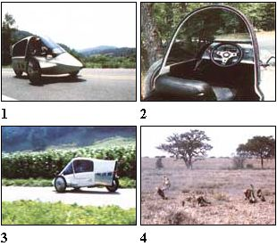
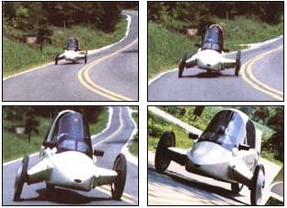

It doesn't take a trained eye to see that the vehicle shown in the accompanying photos is anything but ordinary. As a matter of fact, it took an investment of over three years of design and fabrication work to develop this functional prototype ... which allows its creators - MOTHER's founder John Shuttleworth and members of our research crew-to actually put into practice a number of concepts that had previously been seen only on paper (if anywhere).
On page 158 of issue 80, we gave MOTHER-readers a brief preview of our project car ... which was then undergoing some initial testing. In that article, we pointed out that [1] the American public is experiencing a metamorphosis in its approach to personal transportation, and [2] our vehicle fills a niche that didn't even exist until the car was actually built!
If that's difficult to understand, consider the following: Despite the fact that petroleum prices seem to have stabilized for the present and big cars are still very much a part of our highway scene, the trend is undeniably toward smaller, lighter, more functional automobiles ... even if they're often "disguised" as traditional sedans. And, given that "new" direction, it's not inconceivable that micro-minis-cars even smaller than today's subcompacts-might soon become common on American thoroughfares ... just as they've been on the crowded streets of Europe and the Orient for years.
The reasons for this shift toward smallness are varied, but the price of fuel and the increase in traffic density aren't the only factors. Studies indicate that some 80% of all passenger car trips involve the driver alone ... and that, about three-quarters of the time, auto travel is concerned with distances of less than ten miles. In addition, families are generally smaller today than they were in the past, and there are more singles in the population now than at any previous time.
Furthermore, coupled with such factors are indications that consumers are becoming enthusiastic- once again-about sporty cars. (The appearance on the market of two-seaters, convertibles, and fuel-efficient, high- performance sports cars is one sign that this is so.)
These trends provide some of our reasons for thinking that there may soon be a market for a cambering (or leaning) car. The simplest way to explain our prototype is probably to acknowledge that it's a unique hybrid of motorcycle and automobile. And, whether you're a cycle rider or not, you can appreciate that a two-wheeler offers an exciting ride ... at a cost that's easy to live with! But when it's raining cats and dogs, even the most adventurous soul might trade saddlebags for a cozy cockpit.
On the other hand, of course, automobiles are becoming so expensive-both to purchase and to maintain-that many people are more willing to consider alternatives than they might have been a few years back ... and those same individuals may not mind sacrificing "parlor" comfort for affordability. Our hybridization of the two types of vehicles, then, was aimed at producing an entirely new category of road machine that's akin to a street motorcycle, but offers much of the protection and convenience of a small car.
Then again, a vehicle such as ours presents a number of distinct practical advantages. Because it's registered as a motorcycle, license fees, taxes, and insurance costs are a fraction of what they'd be for even a small automobile. Similarly, many federal requirements- which often add to the cost of a car-simply don't apply in this case.
To make the vehicle function correctly, a suspension system had to be developed that would absorb road shocks and support the car while allowing it to lean into corners with full steering control. For several reasons, we chose to use a triangular wheel arrangement ... with the single roller to the rear. This effectively solves the stability problem inherent in a two-wheeled vehicle, yet still permits the entire chassis to camber, because that one rear tire provides a natural pivot point.
And, perhaps not so obviously, this "backward tricycle" concept eliminates a number of potentially troublesome considerations by simply making them irrelevant! For example, by getting rid of the fourth wheel and relying on one-wheel drive, we've eliminated the need for an expensive, energy-sapping differential (which is universally used to balance power between driven wheels through turns), along with the "extra" suspension components common to conventional autos. Not only does the absence of these parts reduce the vehicle's overall weight, but it also cuts down the rolling resistance of its tires.
In addition, the single-rear- wheel layout provides near-perfect weight distribution for a rear-engine vehicle, and-if properly designed-has an inherent cornering stability that's superior to those of many four-wheeled cars.
Better still-aside from the features that make the prototype totally different from any other vehicle-our trike's construction isn't at all unusual (especially by competition-car standards). It's built around a multitubular chassis (made of chrome molybdenum and mild steel components) that uses a network of diagonal bracing to induce rigidity ... and provides additional beltline and overhead protection in the form of substantial main side rails and a center roll bar.
The body-because its aerodynamic shape required specific contours-is made of fiberglass ... which is a strong, lightweight material that can be formed in the workshop, at a reasonable expense, with fairly conventional equipment. Since the shell is similar in shape to an aircraft fuselage (with a small frontal area that minimizes fuel-robbing wind resistance), the seats are arranged in tandem with a small luggage space behind. (Access to the passenger compartment is gained through a sliding canopy that locks in any desired position, from fully opened to fully closed.)
The single-rear-wheel layout is-we discovered-compatible with a number of different powerplants, including those used in motorcycles. But instead of merely mating the rear half of a cycle to our chassis (that route is viable, but both engine ventilation and efficient utilization of space can pose problems), we chose to use a 16-horsepower, 730-cc, two-cylinder industrial engine ... driven through a continuously variable automatic transmission.
And, you may well ask, what's MOM's prototype like to drive? Well, in a word, it's exciting. Corners and curves put this machine in its element ... and there's nothing quite like sweeping around a hairpin bend-banked over and feeling the tires grabbing the pavement for all they're worth-to Out some fun into a driving day. What's more, the vehicle's stable footing and wraparound chassis take the risk out of this carnival ride, and-should the driver want a more sedate cruise-he or she can even "tone down" (or actually eliminate) the lean simply by turning a control knob!
Although we tried a number of different mechanisms in our efforts to find a system to induce camber in the car (because it has more than two wheels, it can't lean naturally like a motorcycle), only a handful proved successful. The "inclination" is at present controlled through a combination of mechanical, hydraulic, and electronic components ... all of which are available as "off the shelf" equipment, and some of which are so basic that they're commonly used in many toys and pocket calculators.
Of course, since the system must acknowledge varying degrees of lean (it would never do to have it be capable of offering only "on" and "off"), three separate inputs are constantly fed into the car's computer control to alter the steering/ leaning geometry (hence the triple-variable geometry 3VG-label). The first factor is the radius of the curve being negotiated (seen as a function of the position of the steering wheel), the second is the speed of the vehicle (the faster it's traveling, the more radically it leans into a turn of a given radius), and the third is the driver's preferred setting of the system, which we mentioned earlier. The bottom line is that the cambering mechanism transfers the vehicle's center of gravity-through chassis/body inclination to the inside of a turn ... thus not only shifting weight to where it'll do the most good, but also enhancing the driver's and passenger's comfort (and feeling of exhilaration), because the seats bank with the car and thus minimize the sideways thrust forces experienced by its occupants.
In plain language, this means that we've achieved a workable balance of excitement, comfort, and safety ... in a package that, if it were manufactured today, probably wouldn't cost more than a touring motorcycle. Of course, this one's just a prototype ... but who can say just what the future might hold for it? Meanwhile, you can look forward to the next issue of MOTHER ... in which we'll present more details, including some nitty-gritty information on how we actually built our "dream car."
As we've said in the accompanying article, our experimental vehicle is a prototype: a one-of-a-kind car that was built to test a great number of calculations and one "impossible" concept. And it does function impressively... but only because we developed-and scrapped-at least six previous designs before we came up with one that could prove itself under the various conditions that most drivers are likely to encounter. Some of our earlier efforts functioned well but rode harshly . . . others required excessive steering effort... and some just plain didn't work.
What we want to stress here, then, is that no machine is perfect, especially if it's a developmental prototype, and this one is no exception. It'd be ideal, for example, if the lean system were a stone-simple mechanical affair with a minimum of moving parts, but research showed us that such a design has some real drawbacks . . . one of which is that it takes almost superhuman force to initially lift the vehicle from the full-bank position. That's why we use hydraulics. (As you may know, a major auto manufacturer's efforts in this field resulted in a leaning vehicle controlled by foot pressure... which simply flops over when parked, if it's not locked in an upright position.)
More components, of course, mean more things to go wrong... and we'll admit that we've had our share. But the basic design seems sound, and only repeated testing will sort out the trouble spots in the system. (Since the front suspension is just a modification of a proven design, a lean system failure-even while the 3VG is moving -isn't necessarily dangerous, because the vehicle can be steered from any position.)
In addition, there's the question of overall comfort. To a person who's never ridden a motorcycle, our vehicle may seem louder and "closer" than the family sedan. Cycle riders should, however, welcome this compromise between car and bike. Avoidance of heat buildup has also been a prime consideration... because the engine is air-cooled and the body-for aerodynamic reasons-has been designed to be as narrow and sleek as possible. The judicious placement of vents and ducts solves those summertime worries, and a more open design could even be utilized should certain engines call for it.
At this point, then, we've reached our initial goal. . . and now it's time to stand back, take a hard look at what we have, and consider just where we might want to go with it!
LEANING TOWARD THE FUTURE: THE 3VG (PART II)
|
 STAFF PHOTOS (CHEETAH PHOTOS BY GEORGE AND LORY FRAME) [1] The canopy can be left open or shut ... to suit the driver's fancy. [2] Tandem seating was used to reduce frontal area, and thus wind resistance. [3 & 4] The correlation between the 3VG's cambering feature and the agility of these East African cheetahs isn't as farfetched as it may seem: To negotiate sudden corners at high speeds, both maintain stability by leaning into the turn, thus moving their centers of mass away from the point of ground contact and relying on gravity to counter centrifugal force. |
 STAFF PHOTOS ABOVE: The 3VG is particularly at home on curves. |
|